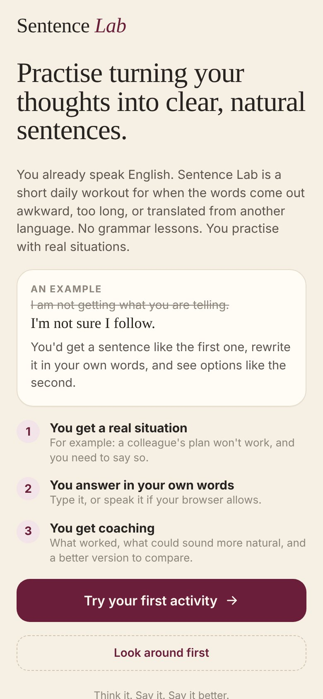
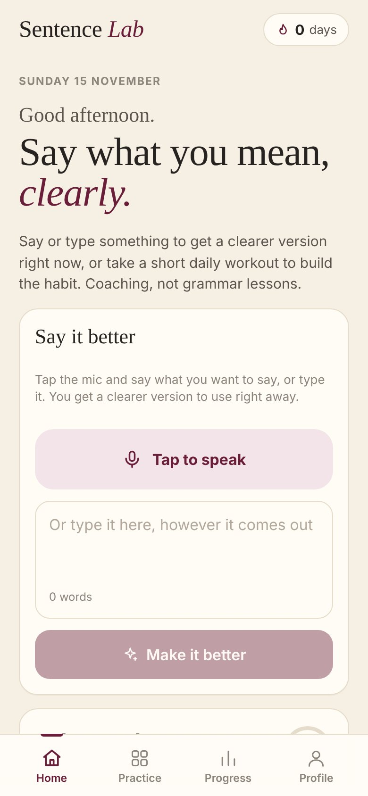
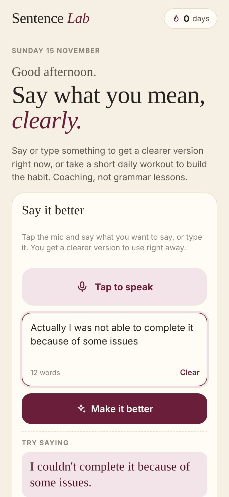
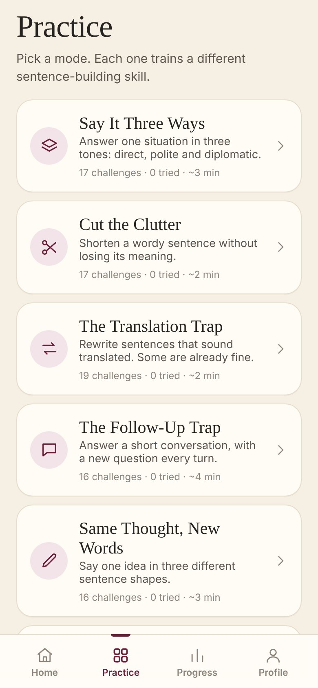
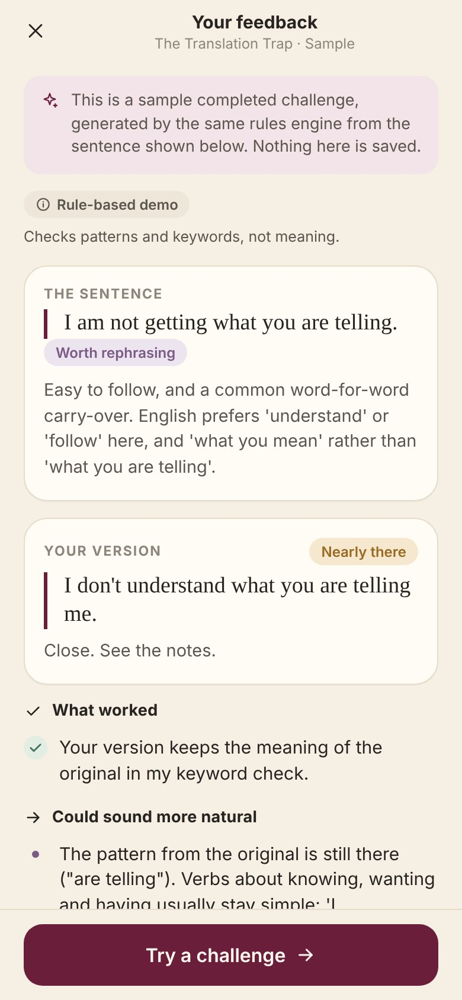

A short daily workout for people who know English but find their sentences come out awkward, too long or translated from another language. Say or type what you mean, and get a clearer version to use right away. This is a live work in progress, so this page records what is built, what is not, and why.
My Role
Founder & Product Manager
Timeline
Nov 2026 — Ongoing
Status
Working prototype · not launched
Stack
React · Tailwind · Claude
Status, plainly: Sentence Lab is a working prototype. It has not launched, it has not been tested with real users yet, and it has no backend or accounts. Everything on this page describes the prototype as it stands today. I will update it as the product moves.
6
Practice modes
100+
Practice prompts
3
Difficulty levels
3
Rounds of simplifying
0
Users tested so far
Built with
React + TailwindMobile-first, single file.
ClaudeWrites the feedback and rewrites.
Rule-based fallbackClearly labelled when AI is off.
localStorageProgress saving. No backend yet.
Next: own serverNeeded before any public launch.
01 — The Idea
Knowing English isn't the same as saying it well.
Many working professionals in India speak English every day and still pause before an email or a meeting comment. They think the sentence in their first language, then translate it word for word. The result is understandable, and slightly off: too long, too blunt, or too hesitant for the moment.
Grammar apps and English courses don't help with that. The sentence is already grammatical. What's missing is practice choosing better words, with someone showing a clearer version straight away.
Practise turning your thoughts into clear, natural sentences.
— the one-line promise on the app's welcome screen
This is my product hypothesis, not yet a validated finding. Talking to the first real users is the next step.
02 — The User
Busy people, not students.
The target user is an Indian working professional between 22 and 50 who already speaks English at work. They don't want a classroom. They want something that feels like a short workout: a real situation, a quick attempt, useful feedback.
1
The person in a hurry
Has something to say right now: a message to a manager, a reply to a client. Wants a better sentence in seconds, by speaking or typing. This is the "Say it better" box on the first screen.
2
The person building a habit
Wants to get steadily better at expressing themselves. Takes a daily workout of three short activities, about ten minutes, and sees which patterns keep coming back.
03 — What It Looks Like
The prototype, as it stands.
Screenshots from the current build, captured on a phone-sized screen.

1. Say what it's forNew users see a plain explanation and a worked example before anything else.

2. Home: say it nowA tap-to-speak box for someone on the move, with a daily workout below it.

3. A clearer versionThe rewrite, a Copy button and a one-line note on what changed.

4. Six ways to practiseEach mode trains a different sentence-building skill.

5. Coaching, not scoresWhat worked, what could sound more natural, and a better version to compare.
The screenshots were taken with the rule-based feedback engine, so the rewrites shown are its simple output. The Claude-powered version writes fuller feedback; the "Rule-based demo" label shown in the app is the app being honest about which one is running.
04 — Key Product Decisions
Every choice had a reason.
1
A communication gym, not an English class
No grammar lessons, no marks out of ten. Each activity starts from a real situation (disagreeing with a colleague, asking a manager for feedback) and feedback is coaching: what worked, what could sound more natural, and a rewrite to compare.
2
No scores or percentages
A number on a sentence suggests false precision, and it makes adults feel tested. Feedback uses plain labels like "Nearly there" instead.
3
Honest AI: label what is running
When Claude is available it writes the feedback. When it isn't, the app falls back to a simple rule-based engine and says so on screen. It never passes simple pattern-matching off as AI coaching, and the fallback states what it can't judge, such as meaning.
4
Six modes, each training one skill
Say It Three Ways (direct, polite, diplomatic), Cut the Clutter, The Translation Trap, The Follow-Up Trap (a three-turn conversation), Same Thought New Words, and The 30-Second Rebuild (first attempt versus improved).
5
A daily workout of three activities
About ten minutes, three modes, at a chosen difficulty (Everyday, Intermediate, Advanced). A streak and a journal of past attempts bring people back and show which patterns keep recurring.
6
Voice optional, typing always works
Speaking is the natural way to rehearse a sentence, but microphones fail on some browsers and networks. So voice is an extra, typing is the fallback, and the app makes no claims about pronunciation.
05 — How It's Being Built
Built in rounds, fixed by feedback.
The prototype was built with AI-assisted development. I wrote the product spec and decided the scope; each round below started from something I noticed or something I was told.
Round 1
Spec to working prototype
Defined the audience, six modes, coaching-style feedback, daily workout and visual style. First build had every feature in the spec.
Round 2
"Too complicated. Too many things at once."
My own reaction on seeing it. Home was cut down to the essentials, and the long coaching feedback now sits behind a "More coaching" toggle.
Round 3
"What is this for?"
Someone new couldn't tell what the app does, and the tagline didn't make sense. Added a welcome screen with a worked example and rewrote the headline in plain words.
Round 4
"Say it better" on the first screen
A product question: what if someone on the move just wants to speak and get a better sentence? That became the first thing on Home, with practice behind it.
Round 5
The rewrites weren't better enough
On testing, the AI barely changed one sentence. I'd told it to keep edits small. I changed the instructions to aim for what a confident professional would actually say, and to offer two alternatives in different tones.
06 — Honest Limitations
What it can't do yet.
1
No server of its own
The Claude-powered feedback and the built-in microphone currently work only inside Claude's environment. Anyone outside it gets the rule-based fallback, which handles a small set of known patterns and can't judge meaning. A public launch needs my own server holding the AI key.
2
No accounts, browser-only progress
Streaks and journals are saved in the browser. They don't sync across devices and are lost if the browser data is cleared.
3
Not tested with real users or on real phones
Voice input across accents, low-end Android phones and weak networks is untested. So is the central question: do people come back? I have no usage data yet and won't claim any.
The PM lesson so far: a feature list isn't a product. Two of my biggest changes, simplifying Home and explaining the purpose, came from looking at the app as a stranger would, before any user had touched it.
07 — Product Skills Shown
What this case demonstrates.
Problem framing
Turned a vague idea into a specific user, a specific moment and a hypothesis I state openly as unvalidated.
Spec writing
Wrote a product spec covering modes, feedback style, difficulty, retention and constraints.
Simplifying
Cut Home back after seeing it looked busy, and moved depth behind a toggle.
AI product design
Chose transparent fallbacks over fake AI, and tuned instructions when rewrites were too timid.
Prioritisation
Put the on-the-go use first and the practice features second.
Launch readiness
Mapped what stands between a prototype and the app stores: a server, accounts, privacy policy, testing.
What's next for Sentence Lab
Prototype built. Making it real is the next phase.
✓ Six practice modes✓ Daily workout✓ Say it better (voice + text)Own server for the AI keyHosting on VercelTest with real usersAccounts & cloud progressInstallable web appApp stores (later)